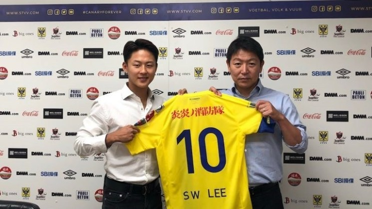

- SON HEUNG-MIN
- LEE SEUNG-WOO
- HWANG HEE-CHAN
LEE SEUNG-WOO

Lee Seung-woo is a South Korean professional footballer who plays as a left winger for Sint-Truiden and the South Korea national team.
Early Life
At age of 12, Lee caught the attention of FC Barcelona after he finished as the top scorer in the 2010 Danone Nations Cup, one of the most prestigious youth football tournaments.
He joined Barcelona's youth academy, La Masia, and scored 39 goals with 29 appearance in his first season He was also named the best player in four youth tournaments
(Torneo Canillas Memorial Gaetano Scirea, Trofeo San Bonifacio, Gabala Cup),
and was nicknamed the "Korean Messi".
However, he was banned from playing in the regular season for three years until his 18th birthday by transfer regulations of FIFA.
On 13 March 2016, he made his senior debut for the B team.